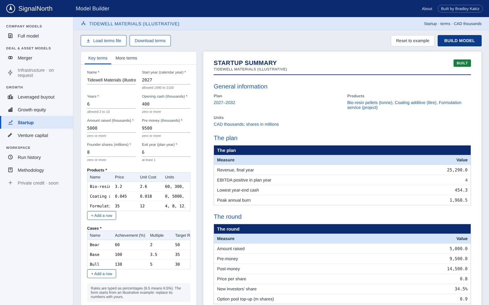
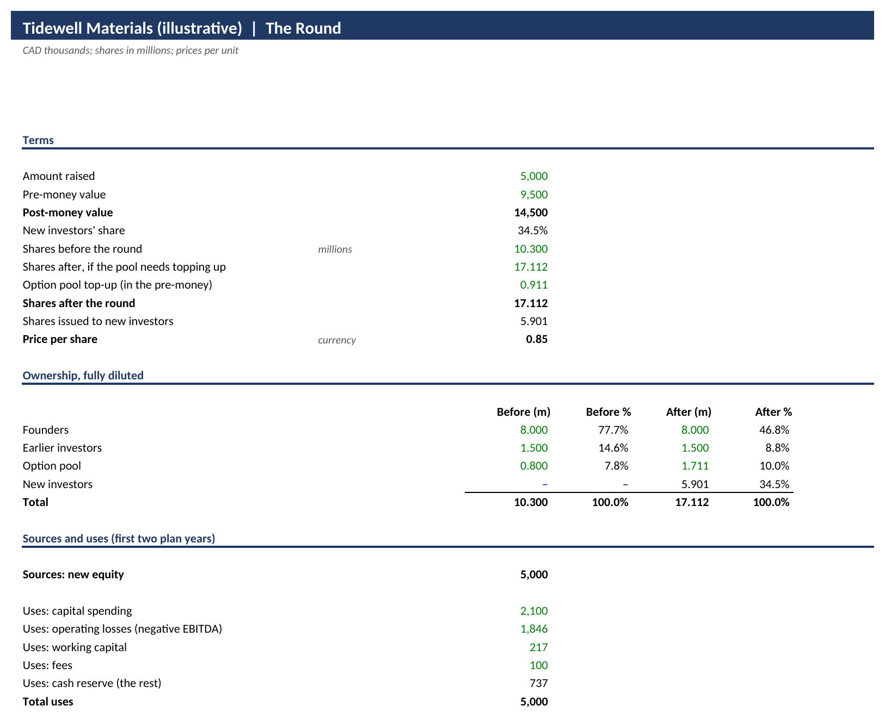
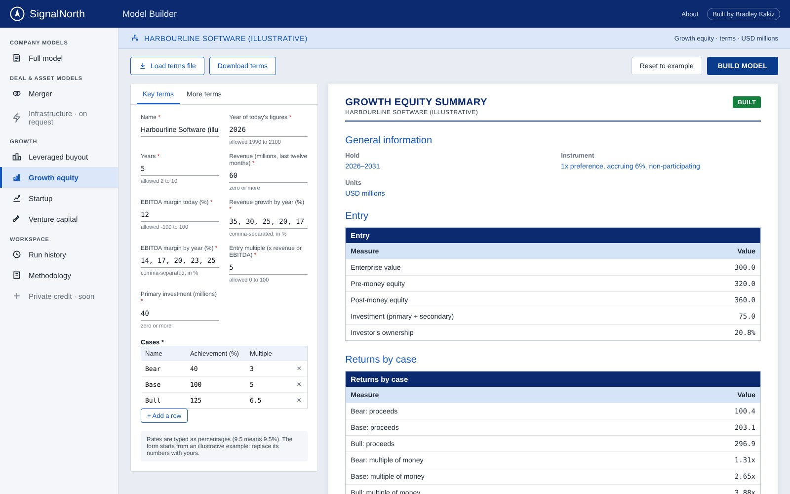
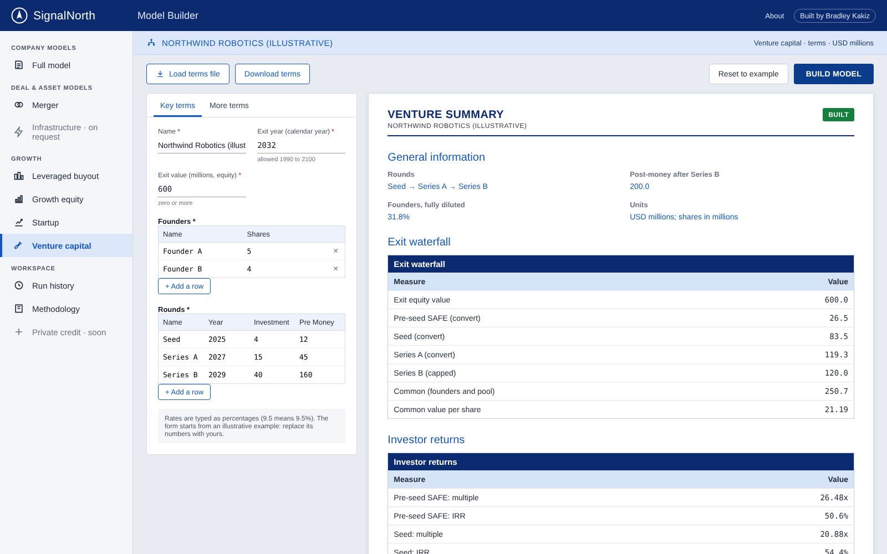

Full company model
Three statements, schedules, debt, cost of capital, DCF, sensitivities and three scenarios, from a ticker's SEC filings or an annual report PDF (US or Canadian). 12 tabs.
Financial models you can audit, line by line. Give it a ticker, a filing or a term sheet, and it builds a working Excel model in minutes instead of days.
The live app runs on a free server: if nobody has used it for a while, the first visit takes about a minute to wake up.
Building a full company model by hand takes an analyst a couple of days: pulling figures from the 10-K, laying out the statements, linking the schedules, checking it balances. Most of that time is mechanical, and most model errors come from it.
SignalNorth does the mechanical part and shows its work. Every number traces to the filing or input it came from, every workbook is live Excel formulas you can audit, and when a model can't be built correctly it says exactly why instead of guessing. It caught a large undervaluation of Visa caused by a years-stale SEC figure, which is why it now cross-checks stale data.
How it's checked
Three statements, schedules, debt, cost of capital, DCF, sensitivities and three scenarios, from a ticker's SEC filings or an annual report PDF (US or Canadian). 12 tabs.
Accretion and dilution, purchase accounting with goodwill, synergies and a pro forma balance sheet. Share prices come from the market.
Sources and uses, debt tranches with a cash sweep, covenants, dividend recap, management incentive pool, returns attribution.
A minority stake with a convertible preference: primary and secondary, exit cases, the waterfall, returns and the value-creation bridge.
Product revenue and unit economics, a hiring plan, runway, the funding round with the option pool, and the venture capital method.
Rounds with an option-pool shuffle, SAFEs, the cap table after every round, and an exit waterfall with liquidation preferences.
Every model writes an investment committee memo in Word: KPI callouts, the instrument, sources and uses, debt metrics, bank-style charts, and a structure for the market, competition, SWOT, risks and team.
Project finance and regulated network models. Available to share on request.
The startup and growth equity models: fill in the terms, build, and read the summary; then the funding round in the Excel workbook.




Open them in Excel; no install needed. Company models use real SEC data; deal terms and the startup, growth and venture examples are illustrative. Not investment advice. Or build your own in the live app.
| Model | Example | File |
|---|---|---|
| Growth equity | Software company, minority stake with a preference (illustrative) | Download .xlsx |
| Startup | Materials startup raising a Series A (illustrative) | Download .xlsx |
| Venture capital | Seed to Series B (illustrative) | Download .xlsx |
| Full company model | Microsoft (MSFT), from its SEC filings, November 2026 | .xlsx · memo |
| Leveraged buyout | Dolby Laboratories (DLB), from its SEC filings | .xlsx · memo |
| Merger | Texas Instruments acquiring Silicon Labs (hypothetical deal, with synergies) | .xlsx · memo |
For developers: the source code is available on request.
Try it yourself, or get in touch and I'll walk you through it.